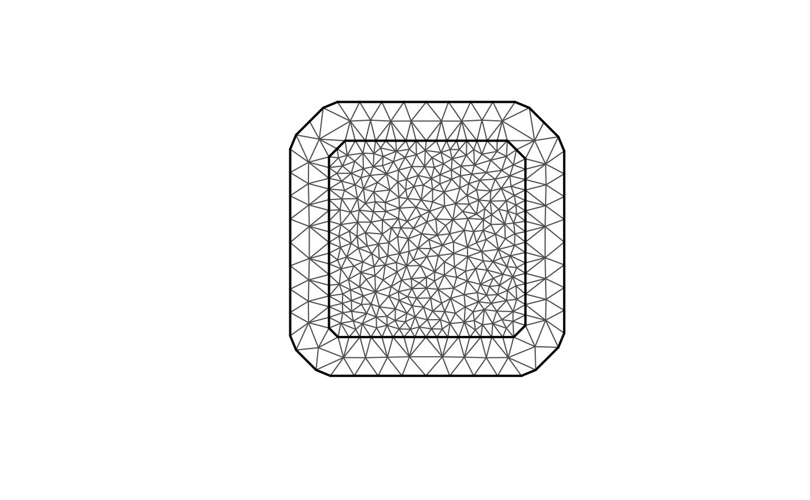

An introduction to the rSPDE package
David Bolin and Alexandre B. Simas
2024-07-24
Source:vignettes/rSPDE.Rmd
rSPDE.RmdIntroduction
In this vignette we provide a brief introduction to the
rSPDE package. The main approach for constructing the
rational approximations is the covariance-based rational SPDE approach
of Bolin, Simas, and Xiong (2023). The package
contains three main “families” of functions that implement the
approach:
To illustrate these different functions, we begin by using the package to generate a simple data set, which then will be analyzed using the different approaches. Further details on each family of functions is given in the following additional vignettes:
The rSPDE package also has a separate group of functions
for performing the operator-based rational approximations introduced in
Bolin and Kirchner (2020). These are
especially useful when performing rational approximations for fractional
SPDE models with non-Gaussian noise. An example in which such
approximation is suitable is when one has the so-called type-G Lévy
noises.
We refer the reader to Wallin and Bolin (2015), Bolin (2013) and Asar et al. (2020) for examples of models
driven by type-G Lévy noises. We also refer the reader to the ngme package
where one can fit such models.
We explore the functions for performing the operator-based rational approximation on the vignette:
A toy data set
We begin by generating a toy data set.
For this illustration, we will simulate a data set on a
two-dimensional spatial domain. To this end, we need to construct a mesh
over the domain of interest and then compute the matrices needed to
define the operator. We will use the R-INLA package to create
the mesh and obtain the matrices of interest.
We will begin by defining a mesh over :
library(fmesher)
n_loc <- 2000
loc_2d_mesh <- matrix(runif(n_loc * 2), n_loc, 2)
mesh_2d <- fm_mesh_2d(
loc = loc_2d_mesh,
cutoff = 0.05,
max.edge = c(0.1, 0.5)
)
plot(mesh_2d, main = "")
We now use the matern.operators() function to construct
a rational SPDE approximation of order
for a Gaussian random field with a Matérn covariance function on
.
We choose
which corresponds to exponential covariance. We also set
and the range as
.
library(rSPDE)
sigma <- 2
range <- 0.25
nu <- 1.3
kappa <- sqrt(8 * nu) / range
op <- matern.operators(
mesh = mesh_2d, nu = nu,
range = range, sigma = sigma, m = 2,
parameterization = "matern"
)
tau <- op$tauWe can now use the simulate function to simulate a
realization of the field
:
u <- simulate(op)Let us now consider a simple Gaussian linear model where the spatial field is observed at locations, under Gaussian measurement noise. For each we have where are iid normally distributed with mean 0 and standard deviation 0.1.
To generate a data set y from this model, we first draw
some observation locations at random in the domain and then use the
spde.make.A() functions (that wraps the functions
fm_basis(), fm_block() and
fm_row_kron() of the fmesher package) to
construct the observation matrix which can be used to evaluate the
simulated field
at the observation locations. After this we simply add the measurment
noise.
A <- spde.make.A(
mesh = mesh_2d,
loc = loc_2d_mesh
)
sigma.e <- 0.1
y <- A %*% u + rnorm(n_loc) * sigma.eThe generated data can be seen in the following image.
library(ggplot2)
library(viridis)
#> Loading required package: viridisLite
df <- data.frame(x1 = as.double(loc_2d_mesh[, 1]),
x2 = as.double(loc_2d_mesh[, 2]), y = as.double(y))
ggplot(df, aes(x = x1, y = x2, col = y)) +
geom_point() +
scale_color_viridis()
The simulated random field is shown in the following figure.
proj <- fm_evaluator(mesh_2d, dims = c(100, 100))
field <- fm_evaluate(proj, field = as.vector(u))
field.df <- data.frame(x1 = proj$lattice$loc[,1],
x2 = proj$lattice$loc[,2],
y = as.vector(field))
ggplot(field.df, aes(x = x1, y = x2, fill = y)) +
geom_raster() + xlim(0,1) + ylim(0,1) +
scale_fill_viridis()
Fitting the model with R-INLA implementation of the
rational SPDE approach
We will now fit the model of the toy data set using our R-INLA implementation of
the rational SPDE approach. Further details on this implementation can
be found in R-INLA implementation of the
rational SPDE approach.
We begin by loading the INLA package and creating the
matrix, the index, and the inla.stack object.
library(INLA)
#> Loading required package: sp
#> This is INLA_24.06.27 built 2024-06-27 02:36:04 UTC.
#> - See www.r-inla.org/contact-us for how to get help.
#> - List available models/likelihoods/etc with inla.list.models()
#> - Use inla.doc(<NAME>) to access documentation
Abar <- rspde.make.A(mesh = mesh_2d, loc = loc_2d_mesh)
mesh.index <- rspde.make.index(name = "field", mesh = mesh_2d)
st.dat <- inla.stack(
data = list(y = as.vector(y)),
A = Abar,
effects = mesh.index
)We now create the model object. We need to set an upper bound for the
smoothness parameter
.
The default value for this is
.
If we increase the upper bound for
we also increase the computational cost, and if we decrease the upper
bound we also decrease the computatoinal cost. For this example we set
nu.upper.bound=2. See the R-INLA
implementation of the rational SPDE approach for further
details.
rspde_model <- rspde.matern(
mesh = mesh_2d,
nu.upper.bound = 2,
parameterization = "spde"
)Finally, we create the formula and fit the model to the data:
f <-
y ~ -1 + f(field, model = rspde_model)
rspde_fit <-
inla(f,
data = inla.stack.data(st.dat),
family = "gaussian",
control.predictor =
list(A = inla.stack.A(st.dat))
)We can get a summary of the fit:
summary(rspde_fit)
#> Time used:
#> Pre = 0.424, Running = 2.55, Post = 0.169, Total = 3.14
#> Random effects:
#> Name Model
#> field CGeneric
#>
#> Model hyperparameters:
#> mean sd 0.025quant 0.5quant
#> Precision for the Gaussian observations 101.649 3.497 94.908 101.600
#> Theta1 for field -3.763 0.125 -3.978 -3.772
#> Theta2 for field 2.239 0.144 1.934 2.246
#> Theta3 for field -0.327 0.075 -0.486 -0.323
#> 0.975quant mode
#> Precision for the Gaussian observations 108.67 101.524
#> Theta1 for field -3.49 -3.817
#> Theta2 for field 2.50 2.279
#> Theta3 for field -0.19 -0.306
#>
#> Marginal log-Likelihood: 853.65
#> is computed
#> Posterior summaries for the linear predictor and the fitted values are computed
#> (Posterior marginals needs also 'control.compute=list(return.marginals.predictor=TRUE)')To get a summary of the fit of the random field only, we can do the following:
result_fit <- rspde.result(rspde_fit, "field", rspde_model)
summary(result_fit)
#> mean sd 0.025quant 0.5quant 0.975quant mode
#> tau 0.0233902 0.00300703 0.0187297 0.0229578 0.0304185 0.0217389
#> kappa 9.4774800 1.33527000 6.9397300 9.4684000 12.1463000 9.5423800
#> nu 0.8382620 0.03635980 0.7624880 0.8403190 0.9045190 0.8476340
tau <- op$tau
result_df <- data.frame(
parameter = c("tau", "kappa", "nu"),
true = c(tau, kappa, nu), mean = c(
result_fit$summary.tau$mean,
result_fit$summary.kappa$mean,
result_fit$summary.nu$mean
),
mode = c(
result_fit$summary.tau$mode,
result_fit$summary.kappa$mode,
result_fit$summary.nu$mode
)
)
print(result_df)
#> parameter true mean mode
#> 1 tau 0.004452908 0.02339024 0.02173886
#> 2 kappa 12.899612397 9.47747535 9.54238163
#> 3 nu 1.300000000 0.83826215 0.84763437We can also obtain the summary in the matern
parameterization by setting the parameterization argument
to matern:
result_fit_matern <- rspde.result(rspde_fit, "field", rspde_model,
parameterization = "matern")
summary(result_fit_matern)
#> mean sd 0.025quant 0.5quant 0.975quant mode
#> std.dev 2.640620 0.2985580 2.146520 2.609940 3.316670 2.495890
#> range 0.286438 0.0452833 0.212123 0.281250 0.388778 0.270566
#> nu 0.838262 0.0363598 0.762488 0.840319 0.904519 0.847634
result_df_matern <- data.frame(
parameter = c("sigma", "range", "nu"),
true = c(sigma, range, nu), mean = c(
result_fit_matern$summary.std.dev$mean,
result_fit_matern$summary.range$mean,
result_fit_matern$summary.nu$mean
),
mode = c(
result_fit_matern$summary.std.dev$mode,
result_fit_matern$summary.range$mode,
result_fit_matern$summary.nu$mode
)
)
print(result_df_matern)
#> parameter true mean mode
#> 1 sigma 2.00 2.6406221 2.4958868
#> 2 range 0.25 0.2864384 0.2705661
#> 3 nu 1.30 0.8382622 0.8476344Kriging with R-INLA implementation of the rational SPDE
approach
Let us now obtain predictions (i.e., do kriging) of the latent field on a dense grid in the region.
We begin by creating the grid of locations where we want to compute
the predictions. To this end, we can use the
rspde.mesh.projector() function. This function has the same
arguments as the function inla.mesh.projector() the only
difference being that the rSPDE version also has an argument
nu and an argument rspde.order. Thus, we
proceed in the same fashion as we would in R-INLA’s standard SPDE
implementation:
projgrid <- rspde.mesh.projector(mesh_2d,
xlim = c(0, 1),
ylim = c(0, 1)
)This lattice contains 100 × 100 locations (the default) which are shown in the following figure:
coord.prd <- projgrid$lattice$loc
plot(coord.prd, type = "p", cex = 0.1)Let us now calculate the predictions jointly with the estimation. To this end, first, we begin by linking the prediction coordinates to the mesh nodes through an matrix
A.prd <- projgrid$proj$AWe now make a stack for the prediction locations. We have no data at
the prediction locations, so we set y= NA. We then join
this stack with the estimation stack.
ef.prd <- list(c(mesh.index))
st.prd <- inla.stack(
data = list(y = NA),
A = list(A.prd), tag = "prd",
effects = ef.prd
)
st.all <- inla.stack(st.dat, st.prd)Doing the joint estimation takes a while, and we therefore turn off
the computation of certain things that we are not interested in, such as
the marginals for the random effect. We will also use a simplified
integration strategy (actually only using the posterior mode of the
hyper-parameters) through the command
control.inla = list(int.strategy = "eb"), i.e. empirical
Bayes:
rspde_fitprd <- inla(f,
family = "Gaussian",
data = inla.stack.data(st.all),
control.predictor = list(
A = inla.stack.A(st.all),
compute = TRUE, link = 1
),
control.compute = list(
return.marginals = FALSE,
return.marginals.predictor = FALSE
),
control.inla = list(int.strategy = "eb")
)We then extract the indices to the prediction nodes and then extract the mean and the standard deviation of the response:
id.prd <- inla.stack.index(st.all, "prd")$data
m.prd <- matrix(rspde_fitprd$summary.fitted.values$mean[id.prd], 100, 100)
sd.prd <- matrix(rspde_fitprd$summary.fitted.values$sd[id.prd], 100, 100)Finally, we plot the results. First the mean:
field.pred.df <- data.frame(x1 = projgrid$lattice$loc[,1],
x2 = projgrid$lattice$loc[,2],
y = as.vector(m.prd))
ggplot(field.pred.df, aes(x = x1, y = x2, fill = y)) +
geom_raster() + xlim(0,1) + ylim(0,1) +
scale_fill_viridis()
#> Warning: Removed 396 rows containing missing values or values outside the scale range
#> (`geom_raster()`).Then, the marginal standard deviations:
field.pred.sd.df <- data.frame(x1 = proj$lattice$loc[,1],
x2 = proj$lattice$loc[,2],
sd = as.vector(sd.prd))
ggplot(field.pred.sd.df, aes(x = x1, y = x2, fill = sd)) +
geom_raster() + xlim(0,1) + ylim(0,1) +
geom_raster() +
scale_fill_viridis()
#> Warning: Removed 6156 rows containing missing values or values outside the scale range
#> (`geom_raster()`).
#> Removed 6156 rows containing missing values or values outside the scale range
#> (`geom_raster()`).
Fitting the model with inlabru implementation of the
rational SPDE approach
We will now fit the same model of the toy data set using our inlabru implementation of
the rational SPDE approach. Further details on this implementation can
be found in inlabru
implementation of the rational SPDE approach.
We begin by loading the inlabru package:
The creation of the model object is the same as in
R-INLA’s case:
rspde_model <- rspde.matern(
mesh = mesh_2d,
nu.upper.bound = 2,
parameterization = "spde"
)The advantage with inlabru is that we do not need to
form the stack manually, but can simply collect the required data in a
data.frame():
toy_df <- data.frame(coord1 = loc_2d_mesh[,1],
coord2 = loc_2d_mesh[,2],
y = as.vector(y))
coordinates(toy_df) <- c("coord1", "coord2")Finally, we create the component and fit:
cmp <-
y ~ -1 + field(coordinates, model = rspde_model)
rspde_bru_fit <-
bru(cmp,
data=toy_df,
options=list(
family = "gaussian")
)At this stage, we can get a summary of the fit just as in the
R-INLA case:
summary(rspde_bru_fit)
#> inlabru version: 2.11.1
#> INLA version: 24.06.27
#> Components:
#> field: main = cgeneric(coordinates), group = exchangeable(1L), replicate = iid(1L)
#> Likelihoods:
#> Family: 'gaussian'
#> Data class: 'SpatialPointsDataFrame'
#> Predictor: y ~ .
#> Time used:
#> Pre = 0.208, Running = 2.58, Post = 0.442, Total = 3.23
#> Random effects:
#> Name Model
#> field CGeneric
#>
#> Model hyperparameters:
#> mean sd 0.025quant 0.5quant
#> Precision for the Gaussian observations 101.668 3.497 94.925 101.618
#> Theta1 for field -3.684 0.123 -3.935 -3.681
#> Theta2 for field 2.171 0.142 1.886 2.173
#> Theta3 for field -0.373 0.079 -0.521 -0.376
#> 0.975quant mode
#> Precision for the Gaussian observations 108.693 101.543
#> Theta1 for field -3.451 -3.668
#> Theta2 for field 2.445 2.182
#> Theta3 for field -0.211 -0.386
#>
#> Deviance Information Criterion (DIC) ...............: -3266.47
#> Deviance Information Criterion (DIC, saturated) ....: 2300.60
#> Effective number of parameters .....................: 297.95
#>
#> Watanabe-Akaike information criterion (WAIC) ...: -3257.99
#> Effective number of parameters .................: 265.51
#>
#> Marginal log-Likelihood: 853.65
#> is computed
#> Posterior summaries for the linear predictor and the fitted values are computed
#> (Posterior marginals needs also 'control.compute=list(return.marginals.predictor=TRUE)')and also obtain a summary of the field only:
result_fit <- rspde.result(rspde_bru_fit, "field", rspde_model)
summary(result_fit)
#> mean sd 0.025quant 0.5quant 0.975quant mode
#> tau 0.0253177 0.00308018 0.0196175 0.0252343 0.0316572 0.025131
#> kappa 8.8568800 1.24979000 6.6087000 8.7904300 11.5069000 8.678780
#> nu 0.8157250 0.03785300 0.7456920 0.8140100 0.8940130 0.808801
tau <- op$tau
result_df <- data.frame(
parameter = c("tau", "kappa", "nu"),
true = c(tau, kappa, nu), mean = c(
result_fit$summary.tau$mean,
result_fit$summary.kappa$mean,
result_fit$summary.nu$mean
),
mode = c(
result_fit$summary.tau$mode,
result_fit$summary.kappa$mode,
result_fit$summary.nu$mode
)
)
print(result_df)
#> parameter true mean mode
#> 1 tau 0.004452908 0.02531772 0.02513105
#> 2 kappa 12.899612397 8.85687795 8.67878491
#> 3 nu 1.300000000 0.81572487 0.80880103Let us obtain a summary in the matern parameterization
by setting the parameterization argument to
matern:
result_fit_matern <- rspde.result(rspde_bru_fit, "field", rspde_model,
parameterization = "matern")
summary(result_fit_matern)
#> mean sd 0.025quant 0.5quant 0.975quant mode
#> std.dev 2.668300 0.2969150 2.166860 2.640250 3.322540 2.625650
#> range 0.296292 0.0450987 0.219147 0.292483 0.394673 0.285176
#> nu 0.815725 0.0378530 0.745692 0.814010 0.894013 0.808801
result_df_matern <- data.frame(
parameter = c("sigma", "range", "nu"),
true = c(sigma, range, nu), mean = c(
result_fit_matern$summary.std.dev$mean,
result_fit_matern$summary.range$mean,
result_fit_matern$summary.nu$mean
),
mode = c(
result_fit_matern$summary.std.dev$mode,
result_fit_matern$summary.range$mode,
result_fit_matern$summary.nu$mode
)
)
print(result_df_matern)
#> parameter true mean mode
#> 1 sigma 2.00 2.6683038 2.6256470
#> 2 range 0.25 0.2962922 0.2851758
#> 3 nu 1.30 0.8157249 0.8088010Kriging with inlabru implementation of the rational
SPDE approach
Let us now obtain predictions (i.e., do kriging) of the latent field on a dense grid in the region.
We begin by creating the grid of the locations where we want to evaluate the predictions. We begin by creating a regular grid in and then extract the coorinates:
pred_coords <- data.frame(x1 = projgrid$lattice$loc[,1],
x2 = projgrid$lattice$loc[,2])
coordinates(pred_coords) <- c("x1", "x2")Let us now compute the predictions. An advantage with
inlabru is that we can do this after fitting the model to
the data:
field_pred <- predict(rspde_bru_fit, pred_coords, ~field)The following figure shows the mean of these predictions:
field_pred_df <- field_pred@data
field_pred_df <- cbind(field_pred_df, field_pred@coords)
ggplot(field_pred_df, aes(x = x1, y = x2, fill = mean)) +
geom_raster() + xlim(0,1) + ylim(0,1) +
scale_fill_viridis()The following figure shows the marginal standard deviations of the predictions:
ggplot(field_pred_df, aes(x = x1, y = x2, fill = sd)) +
geom_raster() + xlim(0,1) + ylim(0,1) +
scale_fill_viridis()
An alternative and very simple approach is to use the
fm_pixels() function:
pxl <- fm_pixels(mesh_2d, format="sp")
field_pred <- predict(rspde_bru_fit, pxl, ~field)
ggplot() + gg(field_pred) +
scale_fill_viridis() + xlim(0,1) + ylim(0,1)
Fitting the model with rSPDE
We will now fit the model of the toy data set without using R-INLA or
inlabru. To this end we will use the rational approximation
functions from rSPDE package. Further details can be found
in the vignette Rational approximation with the
rSPDE package.
We use the function rSPDE.construct.matern.loglike() to
define the likelihood. This function is object-based, in the sense that
it obtains several of the quantities it needs from the
rSPDE model object.
Notice that we already created a rSPDE model object to
simulate the data. We will, then, use the same model object. Recall that
the rSPDE model object we created is op.
Let us create an object for estimation, a data.frame
with the data and then fit the model using the rspde_lme()
function.
op_est <- matern.operators(
mesh = mesh_2d, m = 2
)
toy_df_rspde <- data.frame(coord1 = loc_2d_mesh[,1],
coord2 = loc_2d_mesh[,2],
y = as.vector(y))
fit_rspde <- rspde_lme(y ~ -1, data = toy_df_rspde, loc = c("coord1", "coord2"),
model = op_est, parallel = TRUE)We can obtain the summary:
summary(fit_rspde)
#>
#> Latent model - Whittle-Matern
#>
#> Call:
#> rspde_lme(formula = y ~ -1, loc = c("coord1", "coord2"), data = toy_df_rspde,
#> model = op_est, parallel = TRUE)
#>
#> No fixed effects.
#>
#> Random effects:
#> Estimate Std.error z-value
#> alpha 2.184e+00 3.834e-02 56.966
#> tau 6.377e-03 9.726e-04 6.557
#> kappa 1.261e+01 1.482e+00 8.510
#>
#> Random effects (Matern parameterization):
#> Estimate Std.error z-value
#> nu 1.18425 0.03834 30.886
#> sigma 2.02073 0.18930 10.675
#> range 0.24409 0.02804 8.706
#>
#> Measurement error:
#> Estimate Std.error z-value
#> std. dev 0.099241 0.001701 58.33
#> ---
#> Signif. codes: 0 '***' 0.001 '**' 0.01 '*' 0.05 '.' 0.1 ' ' 1
#>
#> Log-Likelihood: 871.5965
#> Number of function calls by 'optim' = 92
#> Optimization method used in 'optim' = L-BFGS-B
#>
#> Time used to: fit the model = 17.3011 secs
#> set up the parallelization = 5.97213 secsLet us compare with the true values:
print(data.frame(
sigma = c(sigma, fit_rspde$matern_coeff$random_effects[2]),
range = c(range, fit_rspde$matern_coeff$random_effects[3]),
nu = c(nu, fit_rspde$matern_coeff$random_effects[1]),
row.names = c("Truth", "Estimates")
))
#> sigma range nu
#> Truth 2.000000 0.2500000 1.300000
#> Estimates 2.020729 0.2440875 1.184251
# Time to fit
print(fit_rspde$fitting_tim)
#> Time difference of 17.3011 secsKriging with rSPDE
We will now do kriging on the same dense grid we did for the R-INLA-based rational
SPDE approach, but now using the rSPDE functions. To this
end we will use the predict method on the
rSPDE model object.
Observe that we need an matrix connecting the mesh to the prediction locations.
Let us now create the data.frame with the prediction
locations:
predgrid <- fm_evaluator(mesh_2d,
xlim = c(0, 1),
ylim = c(0, 1)
)
pred_coords <- data.frame(coord1 = predgrid$lattice$loc[,1],
coord2 = predgrid$lattice$loc[,2])We will now use the predict() method on the
rSPDE model object with the argument
compute.variances set to TRUE so that we can
plot the standard deviations. Let us also update the values of the
rSPDE model object to the fitted ones, and also save the
estimated value of sigma.e.
pred.rspde <- predict(fit_rspde,
data = pred_coords, loc = c("coord1", "coord2"),
compute_variances = TRUE
)
#> Warning: The `data` argument of `predict()` is deprecated as of rSPDE 2.3.3.
#> ℹ Please use the `newdata` argument instead.
#> ℹ `data` was provided but not `newdata`. Setting `newdata <- data`.
#> This warning is displayed once every 8 hours.
#> Call `lifecycle::last_lifecycle_warnings()` to see where this warning was
#> generated.Finally, we plot the results. First the mean:
field.pred2.df <- data.frame(x1 = predgrid$lattice$loc[,1],
x2 = predgrid$lattice$loc[,2],
y = as.vector(pred.rspde$mean))
ggplot(field.pred2.df, aes(x = x1, y = x2, fill = y)) +
geom_raster() + xlim(0,1) + ylim(0,1) +
scale_fill_viridis()
#> Warning: Removed 396 rows containing missing values or values outside the scale range
#> (`geom_raster()`).
Then, the standard deviations:
field.pred2.sd.df <-field.pred2.df <- data.frame(x1 = predgrid$lattice$loc[,1],
x2 = predgrid$lattice$loc[,2],
sd = as.vector(sqrt(pred.rspde$variance)))
ggplot(field.pred2.sd.df, aes(x = x1, y = x2, fill = sd)) +
geom_raster() +
scale_fill_viridis()